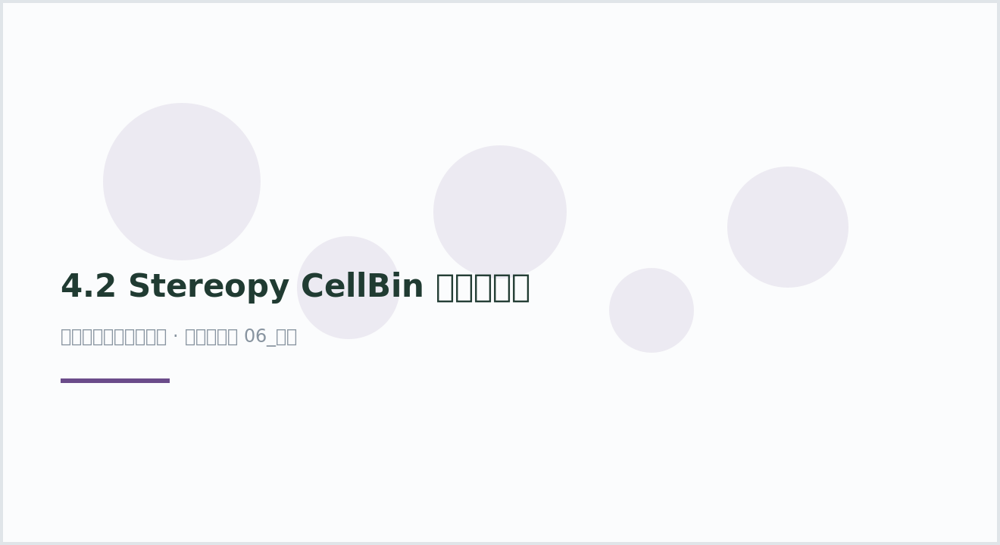

与 Bin 模式的核心区别
| Bin 模式 | CellBin 模式 | |
|---|---|---|
| 每个观测是什么 | 一个 50×50 bin（多细胞混合） | 一个细胞 |
| QC 口径 | 宽松（min_genes=20） |
严格（200 < genes < 2500） |
| 是否要去卷积 | 需要 | 不需要 |
| 聚类标签含义 | 生态位/区域 | 可以直接当细胞类型（仍需注释） |
| UMI 上限 | 无 | 必须卡上限：过高的 genes 是双细胞或分割失败 |
plot49 · 代码 2 · 图 0 · 笔记 1 · 代码库专题
已做细胞分割（CellBin）数据的下游流程。输入是 SAW CellBin 输出的 cellbin.gef。

4.2 Stereopy CellBin 模式下游分析（自动生成占位图）
图源：（自动生成占位图）
从专题 README 抽取；原文顺序保留，未跑过的部分照实标注。
已做细胞分割（CellBin）数据的下游流程。输入是 SAW CellBin 输出的 cellbin.gef。
| Bin 模式 | CellBin 模式 | |
|---|---|---|
| 每个观测是什么 | 一个 50×50 bin（多细胞混合） | 一个细胞 |
| QC 口径 | 宽松（min_genes=20） |
严格（200 < genes < 2500） |
| 是否要去卷积 | 需要 | 不需要 |
| 聚类标签含义 | 生态位/区域 | 可以直接当细胞类型（仍需注释） |
| UMI 上限 | 无 | 必须卡上限：过高的 genes 是双细胞或分割失败 |
| 文件 | 作用 |
|---|---|
stereopy_pipeline_cellbin.py |
主流程（同 Bin 模式，但 QC 口径不同） |
utils.py |
公共函数 |
config.example.yaml |
参数模板 |
conda activate stereo
cp config.example.yaml config.yaml # 填路径与 QC 阈值
python stereopy_pipeline_cellbin.py \
--gef /path/to/cellbin.gef \
--output-dir ./resultsmax_genes=2500 不是可选项：分割失败的细胞会吃掉邻居的转录本，gene 数异常高，不卡掉会在 UMAP 上形成一条假的「高表达轨迹」。py_compile 无语法错误。cellbin.gef 才能端到端验证；本仓库不含数据。3 个源码文件，按目录顺序；本机绝对路径已替换为 ~。 代码可复制，但需要按自己的数据改路径与参数。
# ============================================
# 空间转录组分析 - 全局配置参数
# ============================================
# 配置文件：config/pipeline_config.yaml
# ============================================
# ---- 全局设置 ----
project:
name: "spatial_pipeline" # 项目名称
organism: "Mouse" # 物种：Mouse / Human / Custom
tissue: "brain" # 组织类型
# ---- 计算资源 ----
resources:
cores: 30 # CPU 核心数
memory_gb: 300 # 内存 (GB)
# ---- 10x Visium (Space Ranger) ----
visium:
spaceranger: "/path/to/spaceranger-4.0.1" # Space Ranger 安装路径
transcriptome: "refdata-gex-mm10-2020-A" # 参考基因组路径
probe_set: "probe_set.csv" # 探针集（HD 必需）
slide: "H1-8CPZTMY" # 芯片编号
area: "A1" # 捕获区域
# ---- SeekSpace ----
seekspace:
tools: "/path/to/seekspacetools_v1.0.0" # SeekSpace Tools 路径
chemistry: "DDVS" # 测序化学类型
force_cell: 80000 # 强制指定最大细胞数
min_umi: 200 # 最低 UMI 阈值
include_introns: true # 是否包含内含子
# ---- Stereo-seq (SAW) ----
stereoseq:
saw: "/path/to/saw-8.1.3" # SAW 安装路径
kit_version: "Stereo-seq T FF V1.3" # 试剂盒版本
sequencing_type: "PE75_50+100" # 测序类型
sn: "C04042E3" # 芯片编号
chip_mask: "barcodeToPos.h5" # 芯片 mask 文件
# ---- 下游分析 (Stereopy / Scanpy) ----
downstream:
bin_size: 50 # bin 大小 (bins 模式)
n_pcs: 30 # PCA 主成分数
leiden_resolution: 1.0 # Leiden 聚类分辨率
min_genes: 200 # 细胞过滤：最小基因数
max_genes: 2500 # 细胞过滤：最大基因数
max_pct_mt: 5 # 细胞过滤：最大线粒体比例
"""
Stereopy 下游分析管线 —— CellBin 模式
=======================================
适用场景：已经细胞分割的 cellbin 数据（真实单细胞级）
数据类型：.gef (bin_type='cell_bins')
流程步骤：
1. 数据读取
2. 质量控制 + 过滤（更严格）
3. 归一化 + 高变基因 + 标准化
4. PCA + UMAP 降维
5. 基因表达聚类 (Leiden)
6. 空间邻域聚类
7. 差异基因分析
8. 细胞注释
9. 格式转换 (→ AnnData)
用法：
python 02_pipeline_cellbin.py --gef data.cellbin.gef --output-dir ./results
"""
import os
import argparse
import warnings
import stereo as st
warnings.filterwarnings('ignore')
def parse_args():
parser = argparse.ArgumentParser(
description="Stereopy 下游分析管线 —— CellBin 模式")
parser.add_argument("--gef", required=True, help="输入的 .cellbin.gef 文件路径")
parser.add_argument("--output-dir", default="./results_cellbin",
help="输出目录 (default: ./results_cellbin)")
parser.add_argument("--min-genes", type=int, default=200,
help="最小基因数过滤细胞 (default: 200)")
parser.add_argument("--max-genes", type=int, default=2500,
help="最大基因数过滤细胞 (default: 2500)")
parser.add_argument("--min-cells", type=int, default=0,
help="最小细胞数过滤基因 (default: 0)")
parser.add_argument("--max-pct-mt", type=float, default=5,
help="最大线粒体比例 (default: 5)")
parser.add_argument("--n-pcs", type=int, default=30,
help="PCA 主成分数 (default: 30)")
parser.add_argument("--n-top-genes", type=int, default=2000,
help="高变基因数量 (default: 2000)")
parser.add_argument("--use-highly-genes", action="store_true",
help="PCA 是否仅用高变基因")
parser.add_argument("--flavor", default="scanpy",
choices=["scanpy", "seurat"],
help="输出 AnnData 格式 (default: scanpy)")
return parser.parse_args()
def main():
args = parse_args()
os.makedirs(args.output_dir, exist_ok=True)
# ========== 1. 数据读取 ==========
print("[1/9] 读取 CellBin 数据...")
data = st.io.read_gef(
file_path=args.gef,
is_sparse=True,
bin_type='cell_bins',
)
print(f" 读取完成: {data}")
# ========== 2. 质量控制 ==========
print("[2/9] 质量控制...")
data.tl.cal_qc()
# 小提琴图
from stereo.plots import violin_distribution
fig = violin_distribution(data)
fig.savefig(os.path.join(args.output_dir, "01_qc_violin.png"), dpi=150)
# 空间散点图
import matplotlib.pyplot as plt
fig_spatial, axes = plt.subplots(1, 2, figsize=(16, 6))
data.plt.spatial_scatter(
cells_key=['total_counts', 'n_genes_by_counts'],
dot_size=None, palette='rainbow')
plt.savefig(os.path.join(args.output_dir, "02_spatial_qc.png"), dpi=150, bbox_inches='tight')
plt.close()
# 每个细胞的 count 数
total_counts = data.cells.get_property('total_counts')
print(f" total_counts 范围: {total_counts.min()} ~ {total_counts.max()}")
data.plt.genes_count()
print(" QC 完成")
# ========== 3. 过滤 ==========
print("[3/9] 过滤细胞和基因...")
data = data.tl.filter_cells(
min_gene=args.min_genes,
min_n_genes_by_counts=3,
max_n_genes_by_counts=args.max_genes,
pct_counts_mt=args.max_pct_mt,
inplace=True,
)
data = data.tl.filter_genes(min_cell=args.min_cells)
# 可选：按坐标过滤
# data = data.tl.filter_coordinates(min_x=None, min_y=None, ...)
print(f" 过滤后: {data}")
# ========== 4. 保存原始 Count ==========
print("[4/9] 保存原始 Count (raw)...")
data.tl.raw_checkpoint()
print(f" Raw data: {data.tl.raw}")
# ========== 5. 归一化 ==========
print("[5/9] 归一化...")
data.tl.normalize_total()
data.tl.log1p()
data.tl.highly_variable_genes(
min_mean=0.0125,
max_mean=3,
min_disp=0.5,
n_top_genes=args.n_top_genes,
res_key='highly_variable_genes',
)
data.tl.scale()
# 高变基因图
data.plt.highly_variable_genes(res_key='highly_variable_genes')
print(" 归一化完成")
# ========== 6. 降维 ==========
print("[6/9] 降维 (PCA + UMAP)...")
data.tl.pca(
use_highly_genes=args.use_highly_genes,
n_pcs=args.n_pcs,
res_key='pca',
)
data.tl.neighbors(
pca_res_key='pca',
res_key='neighbors',
)
data.tl.umap(
pca_res_key='pca',
neighbors_res_key='neighbors',
res_key='umap',
)
# 在 UMAP 上展示基因
data.plt.umap(gene_names=['Atpif1', 'Tmsb4x'], res_key='umap')
print(" 降维完成")
# ========== 7. 聚类 ==========
print("[7/9] 聚类...")
# 7a. 基因表达聚类
data.tl.leiden(neighbors_res_key='neighbors', res_key='leiden')
data.plt.cluster_scatter(res_key='leiden')
print(" 基因表达聚类完成")
# 7b. 空间邻域聚类
data.tl.spatial_neighbors(
neighbors_res_key='neighbors',
res_key='spatial_neighbors',
)
data.tl.leiden(
neighbors_res_key='spatial_neighbors',
res_key='spatial_leiden',
)
data.plt.cluster_scatter(res_key='spatial_leiden')
print(" 空间邻域聚类完成")
# ========== 8. 差异基因分析 ==========
print("[8/9] 差异基因分析...")
data.tl.find_marker_genes(
cluster_res_key='leiden',
method='t_test',
use_highly_genes=False,
use_raw=True,
)
# 差异基因可视化
data.plt.marker_genes_text(
res_key='marker_genes',
markers_num=10,
sort_key='scores',
)
# 某个群 vs rest 的火山图
first_cluster = "1.vs.rest"
data.plt.marker_gene_volcano(
group_name=first_cluster,
vlines=False,
)
print(" 差异基因分析完成")
# ========== 9. 格式转换 ==========
print("[9/9] 转换 AnnData...")
h5ad_path = os.path.join(args.output_dir, "cellbin_result.h5ad")
adata = st.io.stereo_to_anndata(
data,
flavor=args.flavor,
output=h5ad_path,
)
print(f" 结果保存至: {args.output_dir}")
print(f" AnnData: {adata}")
print("\n✅ CellBin 分析完成!")
if __name__ == "__main__":
main()
"""
Stereopy 下游分析 —— 辅助工具函数
===================================
包含常用的分析功能：
- 读取 GEF 文件
- QC 可视化
- 细胞注释
- 格式转换
- AnnData 读取与坐标对齐
"""
import os
import pandas as pd
import scanpy as sc
import stereo as st
import matplotlib.pyplot as plt
def read_gef(gef_path, bin_type='cell_bins', bin_size=None, is_sparse=True):
"""
读取 GEF 文件
参数
----
gef_path : str
.gef 文件路径
bin_type : str
'cell_bins' 或 'bins'
bin_size : int or None
仅 bin_type='bins' 时需要
is_sparse : bool
是否以稀疏矩阵读取
"""
kwargs = {
'file_path': gef_path,
'is_sparse': is_sparse,
'bin_type': bin_type,
}
if bin_size is not None:
kwargs['bin_size'] = bin_size
data = st.io.read_gef(**kwargs)
print(f"读取完成: {data}")
return data
def run_full_qc(data, output_dir='./qc'):
"""运行完整的质控并保存所有质控图"""
os.makedirs(output_dir, exist_ok=True)
# 计算 QC 指标
data.tl.cal_qc()
# 小提琴图
from stereo.plots import violin_distribution
fig = violin_distribution(data)
fig.savefig(os.path.join(output_dir, 'violin.png'), dpi=150, bbox_inches='tight')
plt.close()
# 空间分布
data.plt.spatial_scatter(
cells_key=['total_counts', 'n_genes_by_counts'],
dot_size=None, palette='rainbow',
)
# 基因计数
data.plt.genes_count()
print(f"QC 图片已保存至 {output_dir}/")
return data
def manual_annotation(data, annotation_dict, cluster_key='leiden',
result_key='manual_annotation'):
"""
手动注释细胞群
参数
----
data : StereoExpData
annotation_dict : dict
{cluster_id: cell_type_name}
cluster_key : str
使用的聚类结果 key
result_key : str
注释结果 key
"""
data.tl.annotation(
annotation_information=annotation_dict,
cluster_res_key=cluster_key,
res_key=result_key,
)
print(f"注释完成: {result_key}")
return data
def stereo_to_anndata(data, flavor='scanpy', output='result.h5ad'):
"""Stereopy → AnnData 格式转换"""
adata = st.io.stereo_to_anndata(data, flavor=flavor, output=output)
print(f"转换完成 (flavor={flavor})")
print(f" AnnData: {adata}")
print(f" 保存至: {output}")
return adata
def read_seekspace_anndata(data_dir):
"""
读取 SeekSpace 定量结果为 AnnData
(从 cell_locations.tsv.gz 读取空间坐标)
参数
----
data_dir : str
filtered_feature_bc_matrix 目录
"""
adata = sc.read_10x_mtx(data_dir, var_names='gene_symbols', cache=True)
loc_path = os.path.join(data_dir, "cell_locations.tsv.gz")
if os.path.exists(loc_path):
loc = pd.read_csv(loc_path, sep='\t', index_col=0)
loc = loc.loc[adata.obs_names, ['X', 'Y']]
adata.obs = adata.obs.join(loc)
adata.obsm['X_spatial'] = loc.values
print(f"已加载空间坐标: {loc.shape[0]} 个细胞")
return adata
def merge_sample_info(adata, sample_name, tissue='brain'):
"""添加样本元信息到 AnnData"""
adata.obs['sample'] = sample_name
adata.obs['tissue'] = tissue
return adata